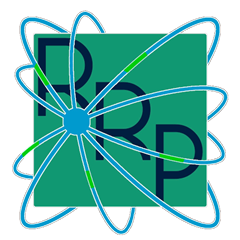

RRP Softphone (Android e Windows) · atualizada em 04/10/2026
O RRP Softphone é um aplicativo de telefonia (softphone SIP) desenvolvido pela RRP Systems Ltda., CNPJ 39.539.153/0001-47. Esta política explica quais dados o aplicativo usa, para quê, e com quem eles são compartilhados, nos termos da Lei Geral de Proteção de Dados (Lei 13.709/2018).
Esses dados não são copiados para backup em nuvem pelo aplicativo e são apagados ao desinstalá-lo ou ao usar “Sair da conta”.
| Dado | Para quem | Para quê |
|---|---|---|
| Ramal, credenciais de autenticação e sinalização das chamadas (números discados e recebidos) | O servidor de telefonia (PBX) configurado na conta | Registrar o ramal e completar as ligações |
| Áudio das chamadas | O servidor de telefonia e a outra pessoa na ligação | A própria conversa. O microfone só é usado durante uma chamada, e o aplicativo não grava as ligações. |
| Identificador de notificação do aparelho (token do Firebase Cloud Messaging) e registro SIP | Servidor de push da RRP Systems (push.rrpsystems.com.br) e Google Firebase Cloud Messaging | Somente no Android, com “Receber chamadas com o app fechado” ligado: avisar o aparelho de que há uma chamada chegando |
| Diagnóstico (informações do aparelho, versão do app, ramal e servidor da conta — nunca a senha —, registros técnicos das chamadas e falhas) | Suporte da RRP Systems (suporte@rrpsystems.com.br), pelo aplicativo que você escolher | Somente quando você toca em Ajustes → Diagnóstico → Enviar: analisar um problema relatado. Nada é enviado automaticamente. |
| Requisição à URL de contatos | O servidor indicado nessa URL | Baixar a agenda, quando essa opção está configurada |
O servidor de telefonia normalmente é operado pela empresa que forneceu o seu ramal, que é a responsável pelo tratamento dos dados de chamadas nele (por exemplo, registros de ligações). O serviço do Google está sujeito à política de privacidade do Google.
Você pode apagar todos os dados locais a qualquer momento, pelo “Sair da conta” ou desinstalando o aplicativo. Para dúvidas, ou para exercer os direitos previstos na LGPD sobre dados tratados pela RRP Systems (como os do servidor de push e os diagnósticos enviados ao suporte), escreva para suporte@rrpsystems.com.br. O passo a passo está em Exclusão de Dados.
O aplicativo é destinado a uso profissional e não é direcionado a menores de 13 anos.
Mudanças nesta política são publicadas nesta página, com a data de atualização no topo.